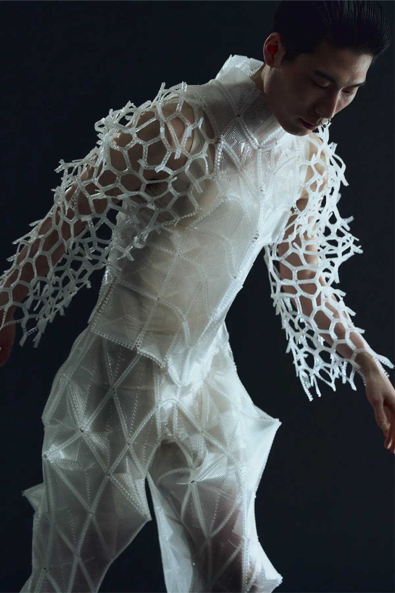
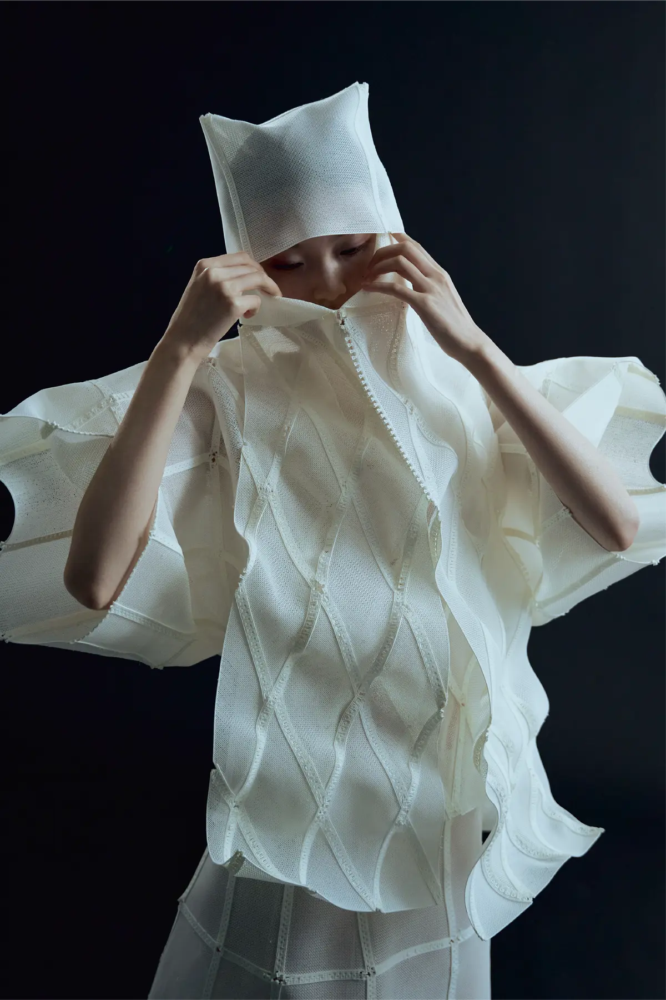
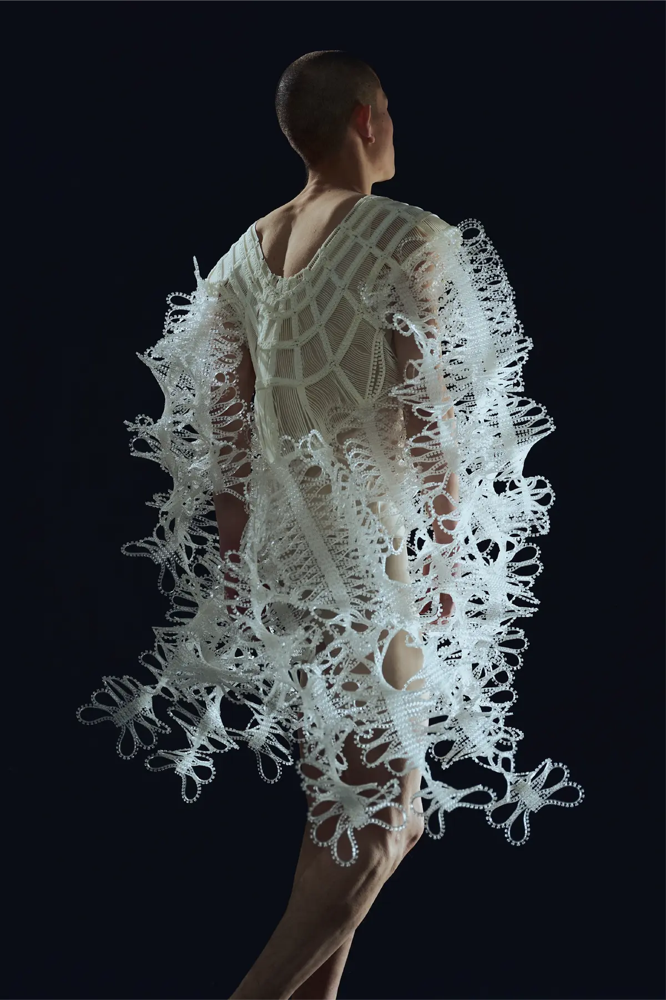
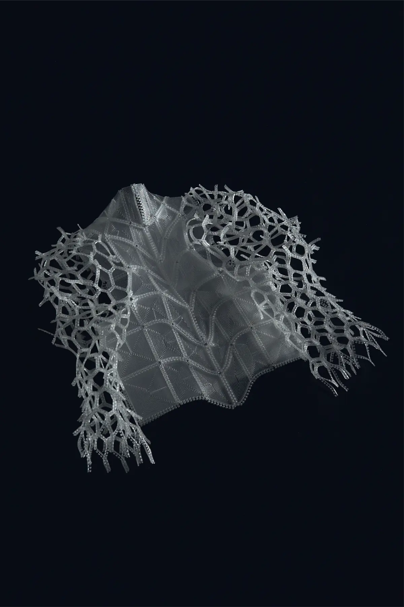
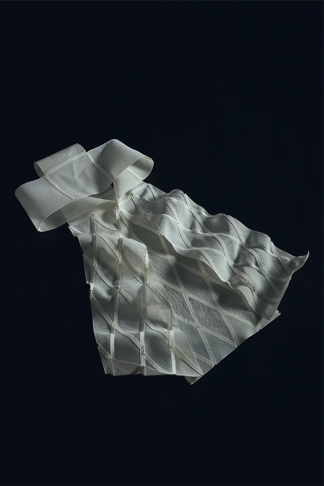
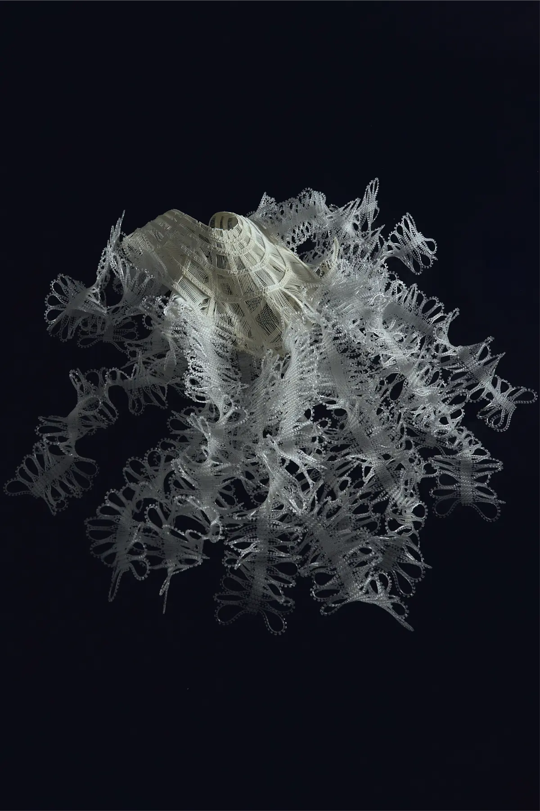

2025–2026
自由曲線に沿うインターロック構造を計算的に設計し、布状・板状の3Dプリント構造物と一体造形するプロジェクト。追加の部品や接着剤を使わず、複雑な立体形状を素早く強固に組み立てる方法を開発しています。
© 2026 Masaya Kaneda.








2025–2026
自由曲線に沿うインターロック構造を計算的に設計し、布状・板状の3Dプリント構造物と一体造形するプロジェクト。追加の部品や接着剤を使わず、複雑な立体形状を素早く強固に組み立てる方法を開発しています。